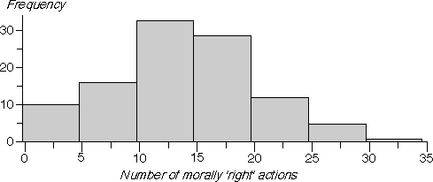

Discrete and continuous data
In this section, we distinguish between two types of numerical data.
- Discrete data
- When the values in the batch are whole numbers (counts), the data set is called discrete. Examples of discrete measurements are:
- the number of absences in a class each day,
- the sizes of new entrants classes in a region on 30 January,
- the number of correct answers in a test.
- Continuous data
- When the data are not constrained to be whole numbers, the data set is called continuous. Examples are:
- the ages of students in class on 1 July,
- the heights of the students in a class.
Note that ages are commonly reported as whole numbers, but age is a continuous quantity that could be recorded to arbitrary accuracy.
Most mark data record the number of correct answers and are discrete
Displaying large counts
Some discrete data sets contain large values. Attendance records at professional football matches provide an example — in this type of discrete data set, all counts would be greater than 1,000. When the counts are large, the distribution of values can be summarised with the same methods as continuous data — dot plots, stem and leaf plots, and histograms.
Displaying moderate counts
For discrete data sets where the range of values is smaller, some or all of the values are likely to be repeated several times in the data set. For such data sets, most of the earier displays can still be used, but:
- Basic dot plots are misleading since repeat values are drawn as a single cross.
- Stacked dot plots are better than jittered dot plots. No information is lost by stacking since there can be a column of crosses for each distinct value.
- Histogram class boundaries should end in '.5' to ensure that data values do not occur on the boundary of two classes.
The following table gives the marks in a maths test for 106 year 7 boys in an intermediate school. The test was marked out of 40.
| 13 17 13 8 7 10 10 21 18 17 |
19 15 15 23 12 12 15 27 19 23 |
6 2 9 11 5 18 20 24 15 14 |
11 2 4 4 13 10 13 19 25 14 |
11 4 14 12 23 19 17 16 17 13 |
7 9 12 11 30 19 4 11 18 18 |
24 15 13 12 6 17 27 3 10 7 |
1 14 22 16 10 2 7 9 5 21 |
18 17 18 12 15 13 13 15 6 25 |
13 15 5 28 20 19 14 11 14 4 |
8 10 7 23 18 24 |
The diagram below shows an unjittered dot plot of the data.
Observe that the basic dot plot gives no indication of the distribution of choices — there is a cross for most possible counts, even though some of these crosses represent several volunteers.
Use the pop-up menu under the diagram to display jittered and stacked dot plots of the data. The stacked dot plot is the best display of these data.
The histogram below is also appropriate for these data. Note however that the bins are defined as '-0.5 to 4.5', '4.5 to 9.5', ... to ensure that the data values do not occur on boundaries.
